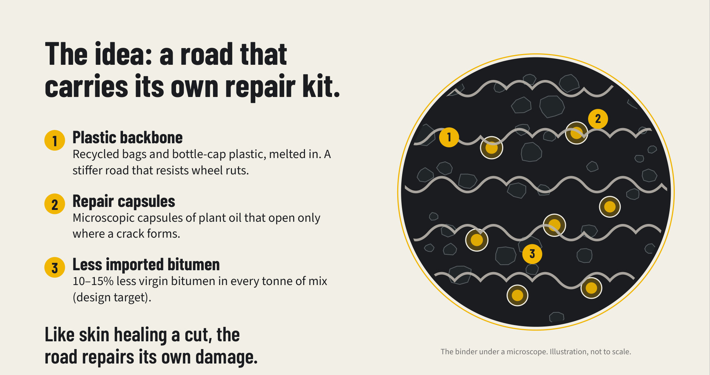
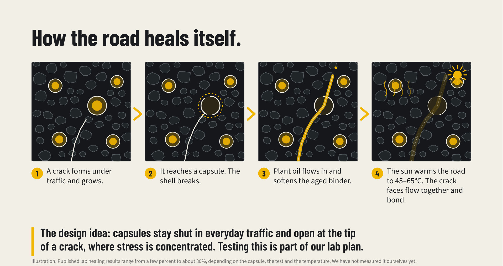
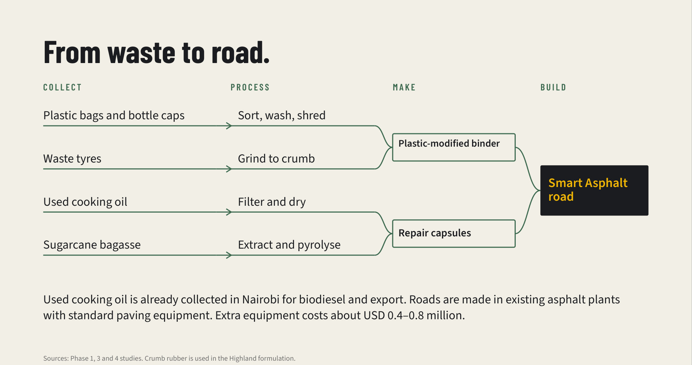

A road that carries its own repair kit.
Think of how skin heals a cut. Smart Asphalt tries to do something similar for the road surface: it hides tiny capsules of plant oil inside the asphalt, and they open where a crack forms.
Everything on this page is the design idea. The healing has been shown in laboratories by other researchers, but not for this exact recipe and not on a Kenyan road.
What goes into the binder.

Recycled plastic backbone
Bags and bottle-cap plastic (the types called LDPE and PP) are melted into the bitumen. This stiffens it so it resists wheel ruts. Published reviews report that recycled polyethylene and polypropylene improve rutting and fatigue resistance, with best results at about 3 to 8% plastic. India has built about 40,000 km of rural road and 2,900 km of highway this way. Evidence T4Evidence T5
Technical detail
Plastic and bitumen tend to separate, so a compatibiliser is added (maleic-anhydride-grafted polyethylene is a documented option). Evidence T6 We designed around 6% plastic by binder weight, 7% for the hot coast. The resulting stiffness gains in our reports are predictions. Whether plastic roads shed microplastics is still an open research question. Evidence T7
Repair capsules
Microscopic capsules with a shell of seaweed jelly (alginate) and a core of plant oil: used cooking oil, castor oil and a little sugarcane-waste oil. The oil is a rejuvenator that softens old, hardened bitumen. Calcium-alginate capsules have been made and mixed into asphalt by researchers at TU Delft and survived the process. Evidence T1Evidence T8
Technical detail
Our design: shell of calcium alginate with about 10% nano-silica, core of about 60% waste cooking oil, 20% castor oil and 20% bagasse bio-oil, 25-45 micrometres across, 3-4% of the binder weight. Published TU Delft capsules were millimetre-sized, so ours are a smaller design target. A 2026 study of bio-based rejuvenators found 5% dosages kept good fatigue performance, while 10-15% caused excessive softening, so dose matters. Evidence T8
Less imported bitumen
Because plastic and plant oils take the place of part of the bitumen, each tonne of asphalt needs less of it. Our model says 10 to 15% less virgin bitumen. This is a design target, not a measurement. Evidence M1
How a crack repairs itself.

A crack forms and grows
Traffic and ageing open a tiny crack in the asphalt. It slowly grows.
It reaches a capsule and the shell breaks
The idea is that capsules stay shut in everyday traffic but open at the tip of a crack, where stress is concentrated. Published tests show capsules can also open under repeated heavy load, so we plan to test this. Evidence T3
Plant oil flows in and softens the old binder
Over time bitumen hardens and turns brittle. The oil softens the hardened bitumen next to the crack so it can flow again.
The sun warms the road and the crack closes
Warm bitumen flows more easily, so the crack faces can flow together and bond. Published studies report that heating above 40°C significantly increases healing. Kenya's pavements get that hot. Evidence T2
How much healing? Published laboratory results vary widely: from only a few percentage points better than no capsules, up to about 80% healing, depending on the capsule, the asphalt and the test temperature. We do not claim a specific figure for our recipe yet. The numbers in our animation and simulator are our own illustrative estimates, not published values. Evidence T2
From waste to road.

The binder would be blended at an asphalt plant and used with standard paving equipment. Our cost estimate for the extra equipment is about USD 0.4 to 0.8 million. That is our estimate. Evidence M7
Technical detail: why three formulas for Kenya?
We designed three variants because Kenya's roads face different stresses. Hot coast (Mombasa): heat and rutting, so more plastic and a thicker capsule shell. Nairobi highlands: heavy traffic and fatigue cracking, so more capsules and some crumb rubber from waste tyres. Black-cotton soil (Athi River): clay that swells and shrinks, so an extra elastic polymer, and the ground must be treated first because no binder can stop ground movement alone. Zone temperatures are our estimates; Kenya's maximum pavement design temperature is 64°C. Evidence P12
The case, and its limits.
The case for
Kenya imports its bitumen. It has plastic, tyre, cooking-oil and bagasse waste. Its warm pavements should favour healing. And much of its road network is in poor or fair condition.
The limits
The healing amount is uncertain. Some of these wastes already have other uses. Our cost and life-cycle numbers are models. There is no Kenyan trial yet. See what we have not proven.